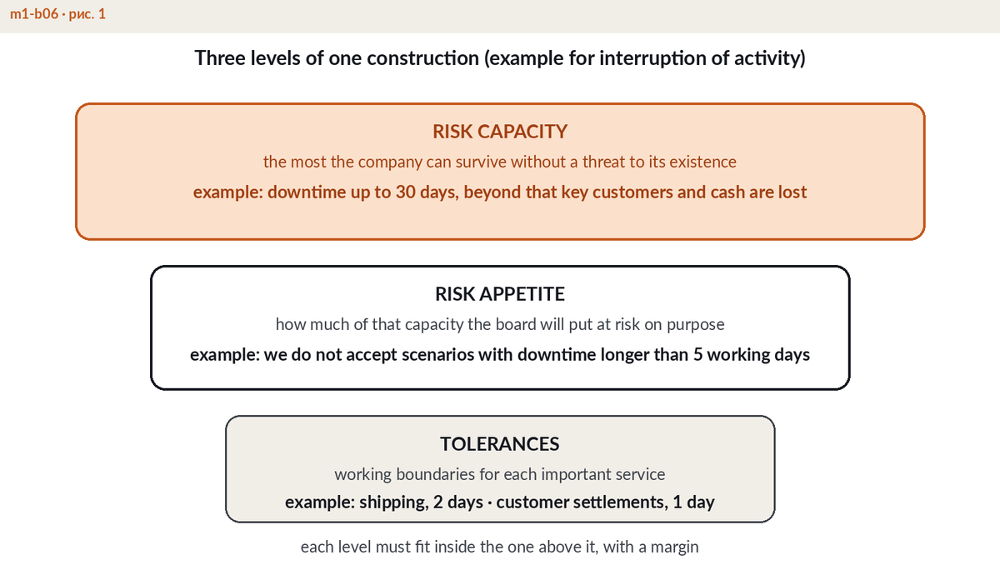
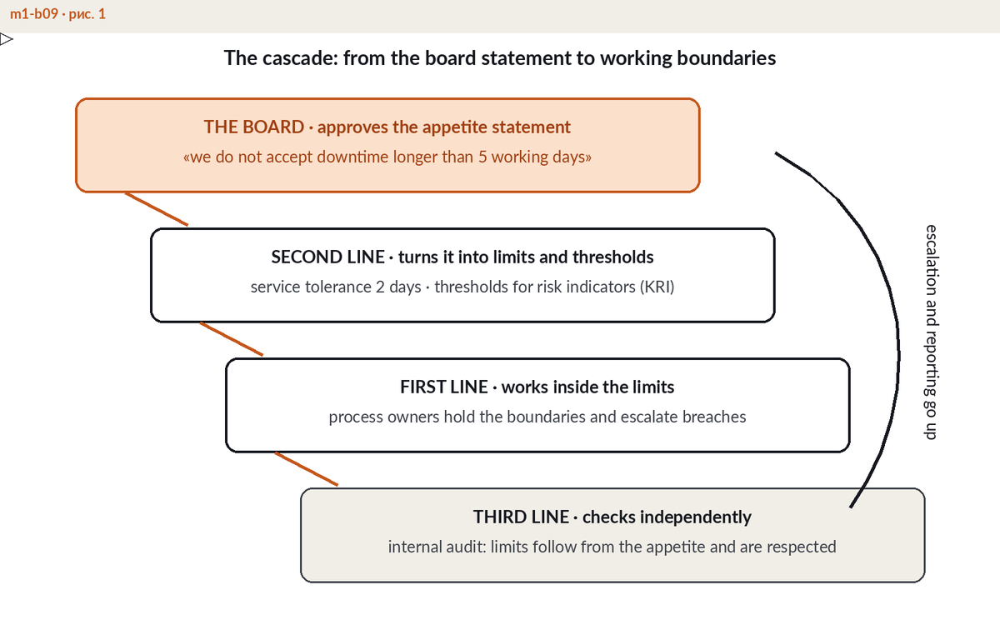

Risk appetite: how to define it and defend it at the board
Risk appetite is the amount and type of risk the board is willing to accept in pursuit of the company's objectives — written down, measured, and translated into working limits for management.
A board document, not a declaration on the wall
Most companies own a sentence such as "we take a prudent approach to risk". That is a motto, not an appetite. A working risk appetite statement is a governance instrument in the sense of ISO 31000 and COSO ERM: the board debates it, approves it, and reviews performance against it. It makes real choices — which risks the company deliberately seeks, which it accepts as the cost of doing business, and which it refuses at any price. And it is written so that it can be breached, because a boundary nobody can cross controls nothing. The practical test takes ten seconds: could a manager use this document to decline a deal, a vendor or a shortcut? If nothing in the business would change after the statement was rewritten, it is decoration.
Capacity, appetite, tolerance: three nested levels
The three words are often used interchangeably; they should not be. Risk capacity is the outer wall — the maximum loss the organisation can absorb without breaching solvency, liquidity, covenants or licence conditions. Risk appetite sits inside capacity: the share of that capacity the board consciously puts at risk to execute the strategy, always leaving a buffer for the surprises no register predicted. Risk tolerances sit inside appetite: measurable boundaries for individual categories and objectives — no single counterparty above USD 25 million, no more than 4 hours of disruption to the payments service, no audit finding open beyond 90 days. Each level must fit inside the previous one. An appetite that exceeds capacity is not ambition; it is a gamble with the balance sheet.

Capacity, appetite, tolerance: each level fits inside the one before.
What a risk appetite statement consists of
A usable statement runs two to four pages and contains five blocks.
Context and strategy link. One paragraph on what the company is trying to achieve and which risks it must take to get there.
Appetite by category. A short table across the major categories — credit, market, operational, continuity, compliance, reputation — with a stance and, wherever possible, a number.
Metrics and tolerances. The specific boundaries: limits, KRI thresholds, and impact tolerances for key services — the point beyond which disruption becomes intolerable harm.
Roles. A named risk owner for every category, who monitors the numbers, who may approve exceptions, and how often the board revisits the document.
Escalation and breach protocol. Who is informed when a boundary is crossed, within what time, and which decisions follow.
Cascade down into limits, escalate up
A statement that stays in the board pack controls nothing. Downwards runs the appetite cascade: board figures become category tolerances, tolerances become business unit limits, limits become operational thresholds and KRIs on management dashboards. Credit appetite turns into counterparty limits; continuity appetite turns into recovery targets per service. Upwards runs escalation: an amber threshold buys management attention, a red breach reaches the risk committee or the board within a defined number of hours — not at the next quarterly meeting. The two directions form one loop, and the loop, not the prose, is what converts a declaration into control. Designing this architecture — statement, cascade, escalation — is covered in module M1 of the ERGP programme.

Downwards, appetite becomes limits and thresholds. Upwards, breaches escalate.
Defending it at the board: five questions to prepare for
"Why these numbers and not others?" Anchor every figure to capacity. Show the arithmetic from equity, liquidity and covenants downwards — not from last year's limit plus 10 percent.
"What does this appetite cost us?" Bring the price of prudence: deals declined, capital held back, controls funded. A board can choose an appetite only when it sees what the risk costs and what avoiding it costs.
"What would a breach look like — and then what?" Walk one concrete scenario end to end: the threshold crossed, who calls whom, the decision taken, the disclosure made.
"How does this connect to disruption of our services?" Show the line from appetite to impact tolerance: the hours of downtime for each key service beyond which the harm becomes intolerable.
"When were we last outside appetite?" Answer honestly. A framework that has never flagged a breach is not evidence of safety — it is evidence of silence.
Common mistakes
A declaration without a cascade. The board approves the statement, but no limit, threshold or KRI below it refers to it.
An appetite with no link to disruption. Market and credit numbers are precise, while the maximum tolerable outage of key services is stated nowhere.
Reviewing once every five years. Appetite should be revisited annually and after every material change — a new strategy, an acquisition, a new regulation, or a near miss that showed the buffer was thinner than assumed.
Purely qualitative wording — "low appetite for operational risk" — that no manager can apply to an actual decision.
This topic is part of the working language of ERGP — the first resilience governance certification fully available in Arabic, also in English. 94 chapters, six modules, a verifiable certificate.